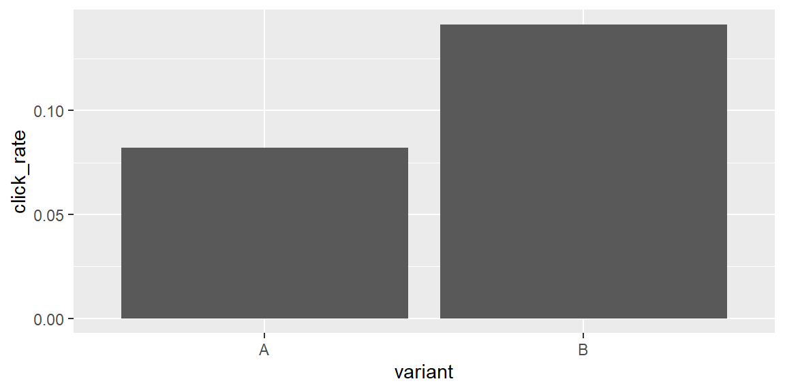

library(tidyverse)
library(palmerpenguins)6 Session 6: Data transformation (II): grouping and summarizing
Objectives
- Change the unit of analysis with grouping. Use
group_by()to organize data into subsets (groups) so that subsequent operations operate within each group rather than on the whole data set. - Compute summaries across groups. Apply
summarize()to compute summary statistics (counts, means, medians, and so on) for each group. Understand thatsummarize()returns one row for each combination of grouping variables. - Use helper functions. Learn to use helpers like
n()andn_distinct()withinsummarize()to count observations and distinct values. - Select top, bottom, or sampled observations per group. Use the
slice_*()family (slice_max(),slice_min(),slice_head(),slice_tail(),slice_sample()) to pull specific rows out of each group. - Know when grouping ends. Understand exactly how much grouping
summarize()removes by default, and howungroup()and the.byargument give you explicit control. - Enhance pipelines. Continue to use the pipe (
|>or%>%) to linkgroup_by(),summarize()and other verbs into clear analytical workflows. - Avoid the single most common grouping bug. Recognize when leftover grouping from an earlier step silently changes what a later
filter()ormutate()computes.
Notes
Grouping with group_by()
group_by() does not change the data itself or reorder any rows; it only adds metadata that tells later dplyr verbs to operate separately on each group instead of on the whole data frame at once. You can see this metadata in how a grouped tibble prints.
penguins_by <- penguins |> group_by(species, island)
penguins_by# A tibble: 344 × 8
# Groups: species, island [5]
species island bill_length_mm bill_depth_mm flipper_length_mm body_mass_g
<fct> <fct> <dbl> <dbl> <int> <int>
1 Adelie Torgersen 39.1 18.7 181 3750
2 Adelie Torgersen 39.5 17.4 186 3800
3 Adelie Torgersen 40.3 18 195 3250
4 Adelie Torgersen NA NA NA NA
5 Adelie Torgersen 36.7 19.3 193 3450
6 Adelie Torgersen 39.3 20.6 190 3650
7 Adelie Torgersen 38.9 17.8 181 3625
8 Adelie Torgersen 39.2 19.6 195 4675
9 Adelie Torgersen 34.1 18.1 193 3475
10 Adelie Torgersen 42 20.2 190 4250
# ℹ 334 more rows
# ℹ 2 more variables: sex <fct>, year <int>Notice the # Groups: species, island [5] line: the data itself looks identical to penguins, but dplyr now knows there are five distinct species-island combinations, and every subsequent verb in the pipeline will respect that grouping until something removes it.
Summarizing with summarize()
summarize() collapses each group down to a single row. Without any prior grouping, it collapses the entire data frame to one row. The expressions inside summarize() must each return a single value per group, which is why functions like mean(), median(), sd(), n() (count of rows), and n_distinct() (count of distinct values) show up here constantly.
penguin_summary <- penguins |>
group_by(species, island) |>
summarize(
count = n(),
mean_mass = mean(body_mass_g, na.rm = TRUE),
sd_mass = sd(body_mass_g, na.rm = TRUE),
distinct_years = n_distinct(year)
)
penguin_summary# A tibble: 5 × 6
# Groups: species [3]
species island count mean_mass sd_mass distinct_years
<fct> <fct> <int> <dbl> <dbl> <int>
1 Adelie Biscoe 44 3710. 488. 3
2 Adelie Dream 56 3688. 455. 3
3 Adelie Torgersen 52 3706. 445. 3
4 Chinstrap Dream 68 3733. 384. 3
5 Gentoo Biscoe 124 5076. 504. 3
NoteRead the message dplyr prints above your output
That line reading “summarise() has grouped output by ‘species’. You can override using the .groups argument” is not a warning to ignore; it is telling you exactly how much grouping survived the summary (see Example 5.2 for what happens when that surprises you).
Ungrouping, and the .by alternative
Grouping set with group_by() sticks around on the result until you explicitly remove it with ungroup(), even after a summarize() (see Example 5.2). If you only need grouping for a single operation, dplyr’s .by argument lets you group and summarize (or mutate, or filter) in one step, with no lingering grouping to remember to undo afterward:
penguins |> summarize(mean_mass = mean(body_mass_g, na.rm = TRUE), .by = species)# A tibble: 3 × 2
species mean_mass
<fct> <dbl>
1 Adelie 3701.
2 Gentoo 5076.
3 Chinstrap 3733.The .by result above has no # Groups: line at all, because the grouping only ever applied to that one call. This is a newer addition to dplyr (version 1.1 and later); you will see both styles, group_by() followed later by ungroup(), and one-off .by, in real code, and it is worth being comfortable reading either one.
Extracting rows within groups: the slice_*() family
Five slice_*() functions pull specific rows out of each group: slice_head() and slice_tail() take the first or last n rows of each group as they currently appear, slice_min() and slice_max() take the rows with the smallest or largest value of some variable, and slice_sample() takes a random sample. All of them accept n for a fixed count or prop for a proportion of each group’s rows.
top_diamonds <- diamonds |>
group_by(cut) |>
slice_max(order_by = price, n = 3, with_ties = FALSE)
top_diamonds# A tibble: 15 × 10
# Groups: cut [5]
carat cut color clarity depth table price x y z
<dbl> <ord> <ord> <ord> <dbl> <dbl> <int> <dbl> <dbl> <dbl>
1 2.01 Fair G SI1 70.6 64 18574 7.43 6.64 4.69
2 2.02 Fair H VS2 64.5 57 18565 8 7.95 5.14
3 4.5 Fair J I1 65.8 58 18531 10.2 10.2 6.72
4 2.8 Good G SI2 63.8 58 18788 8.9 8.85 0
5 2.07 Good I VS2 61.8 61 18707 8.12 8.16 5.03
6 2.67 Good F SI2 63.8 58 18686 8.69 8.64 5.54
7 2 Very Good G SI1 63.5 56 18818 7.9 7.97 5.04
8 2 Very Good H SI1 62.8 57 18803 7.95 8 5.01
9 2.03 Very Good H SI1 63 60 18781 8 7.93 5.02
10 2.29 Premium I VS2 60.8 60 18823 8.5 8.47 5.16
11 2.29 Premium I SI1 61.8 59 18797 8.52 8.45 5.24
12 2.04 Premium H SI1 58.1 60 18795 8.37 8.28 4.84
13 1.51 Ideal G IF 61.7 55 18806 7.37 7.41 4.56
14 2.07 Ideal G SI2 62.5 55 18804 8.2 8.13 5.11
15 2.15 Ideal G SI2 62.6 54 18791 8.29 8.35 5.21
Warning
with_ties = FALSE is not just a style preference
Without it, slice_max() and slice_min() keep every row tied for the cutoff position, so asking for the top 3 can hand you back 4, 5, or more rows in a group with ties. See Example 5.4 for exactly how this plays out.
Putting it together: grouped summaries in a real pipeline
Here is a small (simulated) A/B test: half of a set of website visitors saw variant A of a page, half saw variant B, and clicked records whether each visitor clicked a button.
ab <- read_csv("data/ab_marketing.csv")
click_rates <- ab |>
group_by(variant) |>
summarize(
visitors = n(),
clicks = sum(clicked),
click_rate = mean(clicked)
) |>
arrange(desc(click_rate))
click_rates# A tibble: 2 × 4
variant visitors clicks click_rate
<chr> <int> <dbl> <dbl>
1 B 205 29 0.141
2 A 195 16 0.0821click_rates |>
ggplot(aes(x = variant, y = click_rate)) +
geom_col()
Grouping, then summarizing, then arranging, then plotting is one of the most common shapes a real analysis takes: reduce the raw data down to the handful of numbers you actually care about, then let a plot or a sorted table communicate the result.
Fringe cases and common pitfalls
ExampleExample 5.1
Leftover grouping from an earlier step can silently change what a later step computes.
Suppose you group by species early in a pipeline for one reason, then later try to find the single heaviest penguin in the entire dataset:
# what you probably meant: the one heaviest penguin overall
penguins |> filter(body_mass_g == max(body_mass_g, na.rm = TRUE))# A tibble: 1 × 8
species island bill_length_mm bill_depth_mm flipper_length_mm body_mass_g
<fct> <fct> <dbl> <dbl> <int> <int>
1 Gentoo Biscoe 49.2 15.2 221 6300
# ℹ 2 more variables: sex <fct>, year <int># what you get if the data is still grouped by species from an earlier step
penguins |>
group_by(species) |>
select(species, island, body_mass_g) |>
filter(body_mass_g == max(body_mass_g, na.rm = TRUE))# A tibble: 3 × 3
# Groups: species [3]
species island body_mass_g
<fct> <fct> <int>
1 Adelie Biscoe 4775
2 Gentoo Biscoe 6300
3 Chinstrap Dream 4800The second version returns three rows, one heaviest penguin per species, not the single heaviest penguin overall, because group_by() is still in effect and max() inside filter() is computed separately within each group. Nothing here errors or warns; the code runs perfectly and produces a perfectly reasonable-looking, wrong answer if you forgot the grouping was still active. Whenever a filter() or mutate() gives a surprising number of rows, check whether the data is still grouped from several steps earlier.
ExampleExample 5.2
summarize() only removes the last level of grouping, not all of it.
by_species_island <- penguins |>
group_by(species, island) |>
summarize(n = n())Grouping by two variables and then summarizing does not return an ungrouped result. It peels off only the last grouping variable (island) and leaves the result still grouped by the first one (species), which is exactly what that printed message was telling you:
dplyr::group_vars(by_species_island)[1] "species"If you chain another summarize() immediately afterward expecting it to operate on the whole table, it will instead operate per species, one more time. Setting .groups = "drop" inside the first summarize() removes all grouping in one step, which is often what you actually want at the end of a pipeline:
penguins |>
group_by(species, island) |>
summarize(n = n(), .groups = "drop") |>
dplyr::group_vars()character(0)
ExampleExample 5.3
n() only works inside a dplyr verb, not on its own.
n()Error in `n()`:
! Must only be used inside data-masking verbs like `mutate()`,
`filter()`, and `group_by()`.n() (and n_distinct(), cur_group(), and a few other dplyr helpers) rely on context that only exists while dplyr is actively evaluating mutate(), filter(), summarize(), or group_by(); they have no meaning called by themselves at the console. If you see this error, you have usually copied a line out of a pipeline without its surrounding summarize() or mutate() call.
ExampleExample 5.4
Asking for the top n rows per group can return more than n rows.
ties_example <- tibble(group = c("a", "a", "a"), value = c(5, 5, 3))
# asked for 1 row per group, got 2, because both 5s are tied for first place
ties_example |> group_by(group) |> slice_max(value, n = 1)# A tibble: 2 × 2
# Groups: group [1]
group value
<chr> <dbl>
1 a 5
2 a 5# with_ties = FALSE breaks the tie arbitrarily and returns exactly n rows
ties_example |> group_by(group) |> slice_max(value, n = 1, with_ties = FALSE)# A tibble: 1 × 2
# Groups: group [1]
group value
<chr> <dbl>
1 a 5If your code assumes slice_max(..., n = 3) always returns exactly three rows per group (for example, because you plan to immediately compute n() == 3 or bind several groups’ results into a fixed-size table), a tie will break that assumption. Decide explicitly whether ties should be kept or broken, rather than discovering the answer when a later step chokes on an unexpectedly large group.
Recap
| Term | Definition |
|---|---|
group_by() |
Adds grouping metadata to a data frame without changing or reordering the data itself. |
summarize() |
Collapses each group to a single row using functions that return one value per group. |
n() / n_distinct() |
Count rows, or count distinct values, within the current group; only valid inside a dplyr verb. |
.groups argument |
Controls how much grouping summarize() leaves on its result: "drop_last" (default), "drop", or "keep". |
ungroup() |
Removes all grouping from a data frame explicitly. |
.by |
A per-call alternative to group_by() that applies only to that one verb, leaving no grouping behind afterward. |
slice_max() / slice_min() |
Return the rows with the largest or smallest value of a variable, within each group. |
slice_head() / slice_tail() / slice_sample() |
Return the first, last, or a random sample of rows within each group. |
with_ties |
Controls whether slice_max()/slice_min() keep every row tied for the cutoff position (default) or return exactly n rows. |
| Leftover grouping | Grouping from an earlier pipeline step that silently changes what a later filter() or mutate() computes. |
Check your understanding
NoteProblems
- What does
group_by()actually change about a data frame? What does it leave unchanged? - You run
df |> group_by(a, b) |> summarize(total = sum(x))and then immediately run|> summarize(grand_total = sum(total))on the result, expecting one grand total. You get several rows instead. Explain why, and give two different fixes. - Why does
slice_max(x, n = 5)sometimes return more than 5 rows for a group? How would you force it to return exactly 5? - What is the difference between
group_by(x) |> summarize(...)andsummarize(..., .by = x)? When might you prefer one over the other? - A pipeline groups by
regionearly on for one calculation, then later in the same pipeline tries tofilter()for the single row with the maximumsalesacross the entire dataset, but gets one row per region instead. What went wrong, and how would you fix it?
TipSolutions
group_by()adds grouping metadata that tells later dplyr verbs (summarize(),mutate(),filter(), and others) to operate separately within each group. It does not change any of the actual values in the data frame, add or remove rows, or reorder anything by itself.By default,
summarize()only removes the last grouping variable (b), leaving the result still grouped bya. The secondsummarize()therefore computessum(total)separately within each value ofa, producing one row perainstead of a single grand total. Fixing it means either adding.groups = "drop"to the firstsummarize(), or callingungroup()on its result before summarizing again.slice_max()keeps every row tied for the cutoff position by default, so if there is a tie at the 5th-largest value, you can get 6 or more rows back for that group. Addingwith_ties = FALSEforces it to return exactlynrows by breaking ties arbitrarily.group_by(x) |> summarize(...)leaves the grouping (minus one level) attached to the result, so it persists into whatever comes next in the pipeline unless you remove it.summarize(..., .by = x)groups only for that single call and leaves no grouping behind afterward..byis convenient exactly when you want grouped behavior for one step without having to remember toungroup()later.The
group_by(region)from earlier in the pipeline was never removed (withungroup(),.groups = "drop", or by switching to.by), so the laterfilter(sales == max(sales))computed the maximum separately within each region instead of across the whole dataset. Removing the grouping before thatfilter()(or restructuring the earlier step to use.byinstead ofgroup_by()) fixes it.